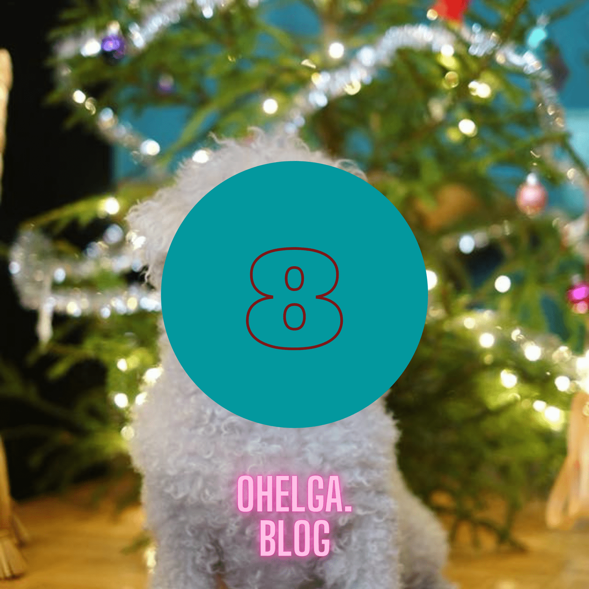

Luukku 8: Slaktarens son bjuder på en retroversion.
Slaktarens son bjuder på en retroversion som är lika lång som bred och lika hög som låg. Tomin mielestä versio on tumma ja turvallinen. Munatotia ja riisipuuroa.
Linkit kappaleeseen:
Apple Music:
Spotify:

Kommentit / Kommentarer (3)
<p>Nat King Cole har jag alltid gillat. Detta gjorde han bra men det är ett stycke som har framförts av de allra bästa genom åren. Man har så många bra versioner att jämföra med. Han hamnar en liten bit ner på listan.</p>
<p>Tycker ni var lite snåla där, för den här versionen har väldigt fin känsla, han sjunger vackert och uttrycksfullt även om han inte är någon operasångare. Och att det är en 60 år gammal inspelning bidrar också till julstämningen, känns klassiskt.</p>
<p>Det är kanske en version som är tänkt mera som bakgrundsmusik än för koncentrerat lyssnande?</p>